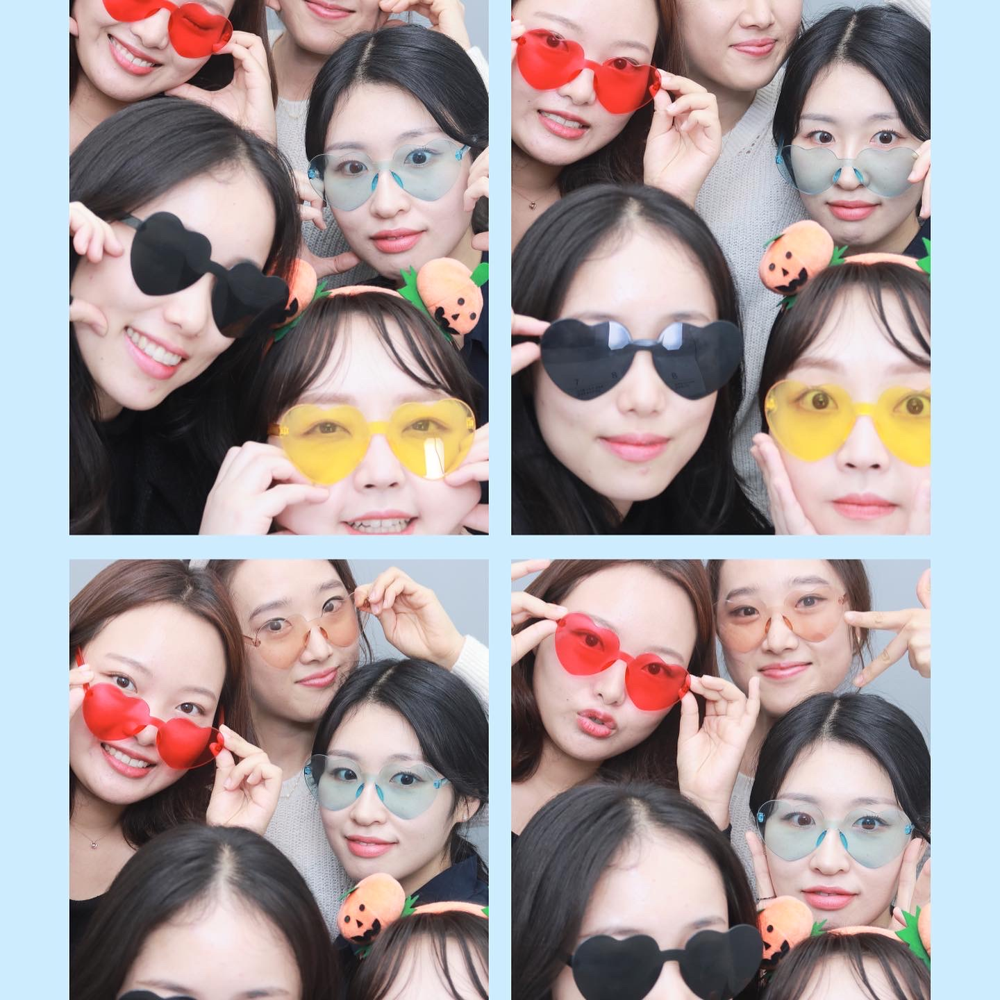

<!doctype html>
<html>

</html><head>
    <title>슬기짱의 홈페이지</title>
    <meta charset="utf-8"
</head>

<body>
<u>Hello world.</u> Hypertext Markup Language (HTML) is the <strong>standard markup language</strong> for creating web pages and web applications. 
<h1>이럴 수가!! 꼭 기억해~~</h1>슬기짱 최고!!!
<h2>제목2가 아닐까여?? 노션이랑 비슷할 것만 같아~~</h2>
<h3>비 내리는 호남선~ 남행열차</h3>
니가 좋아서 그래~ 나 시무룩한 표정하고 있지만
내 마음은 그게 아닌데 거짓말인데 바보같은 니가 난 답답해
하지만 오늘날은 태그가 무엇인지 기초적인 교양만을 알고 있어도 충분히 많은 것을 알 수 있습니다. 그런 점에서 저는 우리의 시작이 빠른 속도로 대단해지고 있다고 생각합니다. 이번 시간에는 통계에 기반하는 
150개의 태그? 다 외우면 좋지 않을까요? 사실은 여러분은 모든 태그를 다 알고 있는 것과 같습니다. 통계를 보여드리면서 좀 말씀을 드려보겠습니다. 기본적인 밑천으로서 
구글에서는 전 세계의 웹페이지를 분석합니다. <p>내용을 보기 좋게 잘 정돈한 사이트가 있어요. 전 세계에 있는 수많은 웹페이지디르이 25~26개 정도의 태그를 가지고 있는 웹페이지가 가장 많다는 것입니다. 이 <h1>이것 하나</h1>만 알아두~~ 평균 이상 간다는 이야기입니다. 
와우 h1 태그가 가장 높군요. 150개 정도 되는 것을 감안</p>한다면.....잊으세요. 일본어를 잘하고 싶어요!! ~적이라는 단어가 가장 많이 쓰인다니!! 
웹페이지에서 헐랭헐랭헐랭!!!!
통계에 기반한 학습!! 
비 내리는 호남선!! <br>남행열차에 흔들리는 차창 너머로<br><br>빗물이 흐르고~ 내 눈물도 흐르고~ 잃어버린 옛 사랑도 흐르네~ 빠밤깜박깜박이는 희미한 기억 속에
정보로서 웹이라는 관점에 관해 생각해보는 계기가 되면 좋겠습니다. 
css가 뭔데여???
왜져? 이 저만큼이 단락이다라는 것을 의미론적으로 표현해줄 수 있습니다. 정보로서 가치있는 html이 된다고 하는군요. 
정해져 있는 여백 만큼이 벌어지게 되어 있기 때문에.... css 수업이 아니기 때문에 잠깐 듣고 잊으시면 됩니다. 여백을 나타내는 코드가 있어요.
7년을 만났죠. 아무도 우리가 이렇게 쉽게 이별할 줄은 몰랐죠. 그래도 우리는 헤어져 버렸죠. 긴 시간 헤어졌던 시간을 남긴 채 우린 어쩜 너무 어린 나이에 서로를 만나게 되었는지 몰라. 변해가는 우리 모습들을 감당하기 어려웠을지도 이별하면 아프다고 하던데 그런 것도 느낄 수가 없었죠. 그저 그냥 그런가봐 하며 담담했는데 울었죠. 후후후 시간이 가면서 내게 준 아쉬움에 그리움에
css는 무엇일까요???? 호호호호호호호
<h3>아쉬움에 그리움에 내 뜻과는 다른 나의 마음을 보면서 </h3>
검색 엔진아~ 어쩌다가 정말 부지런하게 글을 써서 여러분의 웹 사이트에 이런 방식으로 코딩이 되어 있다고 할 때 어떻게 바뀔 것인가를 관전해 보십시오. 그 웹페이지의 html 코드를 분석합니다. 어떤 내용을 가지고 있구나 하는 걸 정리정돈해놓습니다. 일반인의 웹페이지 1억 개라고 알고 있는데 제목이 coding인 사이트 중에 누구의 편을 들어줄까요?? 후후후후후후후 여러분 오늘날 현대사회에서 검색엔진에 노출되는 것!! 여러분이 웹을 만들면서 화려하게 만들고 싶고 어쩌면 훨씬 더 중요한 것은 정보라는 것을 탄탄히 하는 것이 훨씬 더 중요한 이슈라는 거죠. 이미지로 글을 쓰는 경우가 많이 있죠. 검색엔진에게는 존재하지 않는 페이지가 됩니다. 비즈니스적인 측면에서 중요한 측면입니다. 웹 페이지의 소스 코드를 누구나 볼 수 있다. 이런 개방성을 accessibility라고 합니다. 노력해야 한다는 것입니다. 청각화해서 접하게 되는데요. 그런데 웹페이지를 만들 때 문자까지 통으로 이미지로 만든다면 기술과 테크닉이 있습니다만 우리가 이렇게 한다면 누군가에게 큰 도움을 주고 있는 것입니다. 휴머니즘에서 중요한 것입니다. 속성이라고 하는 태그의 심화된 문법을 배울 건데요. 이번 시간에는 아주 인기있는 문법 역시 만나 보겠습니다. 그리고 딱 봤을 때 글씨만 있으면 어때요? 사진 넣는 법을 살펴 보겠습니다. 안 보입니다. 어떤 이미지를 보여줄 것인지에 관한 이야기가 없잖아요. 제가 지금 태그의 이름을 썼지만 
태그의 이름만으로 정보가 부족한 거죠. 여기에  

어떤 태그들은 부모가 있는 곳에 어떤 부모자식과 목록
아직 하지 않은 부분이 목차입니다. 저 목차를 완성할 거고요. 부모 자식 관계에 해당하는 태그를 살펴 보겠습니다. 목차를 써봅시다~ html, css. 
<ol>
             <li>이름은 뭐양</li>슬기짱 이름
    <li>주소</li>슬기짱 주소
    <li>이름이 뭐예요</li>슬기짱 뭐시기뭐시기
</ol>
1억개면!! 코딩을 하지 않는 것이 낫겠죠. 이런 경우에
ul을 
부끄부끄부끄러워요~ 이걸 해결하는 방법은 무엇일까여????? 제목이 뭘까여?????
웹브라우저야~ 이걸 열 때는
슈퍼스타야~~ 전세계에 있는 우리가 공부를 했을 때 얻을 수 있는 효용으로 ~~
여러분은 그런 혁명적인 능력을 갖게 된 것입니다. html의 구조를 작성하는 방법을 살펴 보았고요. 고생 하셨습니다~~
충분히 자세히 살펴 보았습니다. 빈도수가 절대적으로 높은 것을 살펴 보았습니다. 
비 내리는 호남선~ 
흔들리는 차창 너머로~ 빠밤
<a href="https://www.naver.com/">여기를 클릭해용</a>
</body>
<!DOCTYPE html>